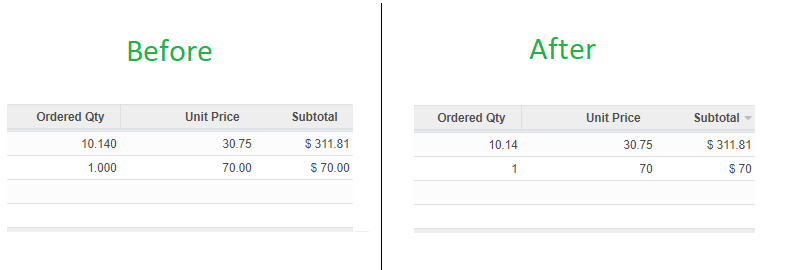

<center>
    <section class="oe_container">
        <div class="oe_row oe_spaced">
            <div class="oe_span12">
                <h2 class="oe_slogan">Show simplify float field</h2>
                <h3 class="oe_slogan">This feature is quite useful for some businesses that rarely use decimal units.</h3>
                <h4 class="oe_slogan"><a href="https://trinhgialac.com">Trình Gia Lạc</a> </h4>
            </div>
            <div class="oe_picture">
                
            </div>
        </div>
    </section>
</center>


